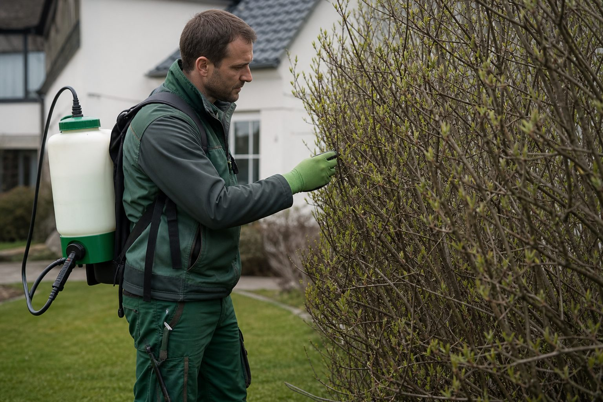

Sachkunde im Pflanzenschutz: Alle drei Jahre Fortbildung – sonst ist Schluss mit Spritzen
Wer Pflanzenschutzmittel anwendet, kauft oder abgibt, braucht den Sachkundenachweis – und muss ihn alle drei Jahre durch eine anerkannte Fortbildung erhalten. Viele Betriebe merken erst bei der Kontrolle, dass die Frist abgelaufen ist.

- Wer Pflanzenschutzmittel beruflich anwendet, berät oder abgibt, braucht den Sachkundenachweis nach § 9 Pflanzenschutzgesetz – auch bei wenigen Einsätzen im Jahr.
- Alle drei Jahre ist eine anerkannte Fortbildung Pflicht; wer die Frist verpasst, darf nicht mehr anwenden oder kaufen, bis sie nachgeholt ist.
- Anerkannt sind Veranstaltungen der Länder, Kammern und Bildungsträger, meist ein halber Tag, oft online; Bescheinigungen aufbewahren.
Das Pflanzenschutzgesetz macht aus dem Umgang mit Pflanzenschutzmitteln eine Frage der Qualifikation. Wer sie beruflich anwendet, wer über die Anwendung berät und wer sie verkauft oder abgibt, braucht nach § 9 PflSchG einen Sachkundenachweis. Im GaLaBau betrifft das jeden Betrieb, der Unkraut auf Wegen bekämpft, Pilzkrankheiten im Rasen behandelt oder Schädlinge an Gehölzen – auch wenn es nur wenige Male im Jahr vorkommt.
Die Dreijahresfrist
Der Nachweis allein reicht nicht. § 9 Abs. 4 PflSchG verpflichtet Sachkundige, innerhalb von jeweils drei Jahren an einer anerkannten Fort- oder Weiterbildungsmaßnahme teilzunehmen. Der erste Dreijahreszeitraum beginnt mit der Ausstellung des Sachkundenachweises, jeder weitere schließt nahtlos an. Wer die Frist verpasst, darf keine Pflanzenschutzmittel mehr anwenden, kaufen oder abgeben, bis die Fortbildung nachgeholt ist – und riskiert, dass der Nachweis entzogen wird.
Was als Fortbildung zählt
Anerkannt sind Veranstaltungen der Länder, der Landwirtschaftskammern, der Landesanstalten und anerkannter Bildungsträger, in Nordrhein-Westfalen etwa die Fortbildungsveranstaltungen der Landwirtschaftskammer, in Bayern die der Ämter für Ernährung, Landwirtschaft und Forsten. Die Veranstaltungen dauern meist einen halben Tag, viele werden online angeboten. Teilnahmebescheinigungen sind aufzubewahren; bei Kontrollen des Pflanzenschutzdienstes werden sie verlangt.
Der Winter ist die Zeit dafür
Die Fortbildungen finden überwiegend zwischen November und März statt – genau dann, wenn Betriebe in der Schlechtwetterzeit Kapazität haben. Drei Empfehlungen:
- Fristen im Betrieb erfassen. Eine Liste mit Name, Ausstellungsdatum des Nachweises und Datum der letzten Fortbildung reicht. Wer sie nicht führt, verlässt sich auf das Gedächtnis seiner Mitarbeiter.
- Die Fortbildung in den Winterplan aufnehmen. Ein halber Tag im Januar kostet weniger als ein Anwendungsverbot im Mai.
- Nicht nur die Anwender schulen. Wer die Mittel bestellt und lagert, braucht die Sachkunde ebenfalls – in vielen Betrieben ist das der Inhaber oder das Büro, und dort wird die Frist am häufigsten vergessen.
Quellen
- Bayerische Landesanstalt für Landwirtschaft (LfL): Regelmäßige Fortbildung im Pflanzenschutz ist verpflichtend (§ 9 Abs. 4 PflSchG, Dreijahreszeitraum) – www.lfl.bayern.de/ips/recht/052356/index.php
- Landwirtschaftskammer Nordrhein-Westfalen: Fort- und Weiterbildungsverpflichtungen für Sachkundige – www.landwirtschaftskammer.de/landwirtschaft/pflanzenschutz/sachkunde/...
- Nationaler Aktionsplan Pflanzenschutz: Sachkunde im Pflanzenschutz – www.nap-pflanzenschutz.de/risikoreduzierung/sachkunde-im-pflanzenschutz
Kommentare
Noch keine Kommentare. Schreiben Sie den ersten.
Bauen bei Frost: Was Beton, Mörtel, Pflaster und Pflanzen unter fünf Grad vertragen
Die Saison endet nicht am Kalender, sondern am Thermometer. Welche Arbeiten bei Kälte weiterlaufen können, wo die Normen Grenzen ziehen und warum der Schaden meist erst im Frühjahr sichtbar wird.

Transporter mit Anhänger: Wann B reicht, wann B96, wann BE – und was die EU ändert
Ein Pritschenwagen mit Bagger auf dem Anhänger ist Alltag im GaLaBau. Ob der Fahrer ihn führen darf, hängt von 4,25 Tonnen ab. Ein Überblick über die Führerscheinklassen, die Kosten und die EU-Novelle.

Was der GaLaBau zahlt: Lohngruppen, Gehaltsgruppen und Ausbildungsvergütung 2025/26
Vom Helfer bis zum Baustellenleiter, von der Bürokraft bis zum Bauleiter: Der Tarifvertrag legt die Sätze fest, nach denen tarifgebundene Betriebe zahlen – und an denen sich der Rest der Branche orientiert. Die Übersicht mit der Erhöhung zum 1. Juli 2026.